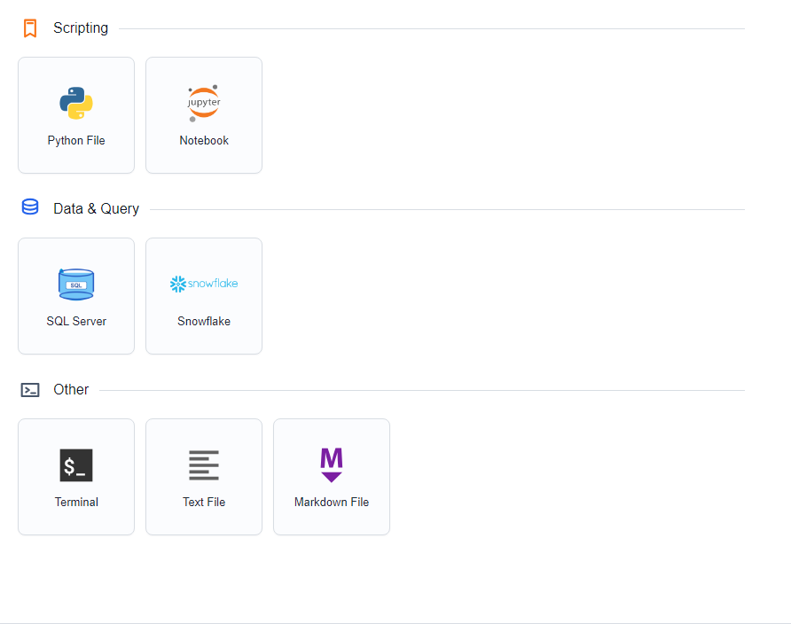

Arcode
Run and save a small review script
Use Arcode for Python files, notebooks, and SQL work. Start with a short local calculation before connecting it to project data.
Open the Scripting Workspace
- Choose Arcode from Arco's Home page.
- Open a Python file with File → Open File..., or choose a new Python editor from Arcode's Home page.
- Use File → Select Workspace Folder... to show your working folder in the sidebar.

Run a Small Calculation
Enter this independent example in a Python editor. Its small illustrative amounts are not a copy of the project's results.
paid = 12500
ultimate = 16000
print("Jordan Lee — illustrative reserve:", ultimate - paid)- Choose Run or press Ctrl + Enter.
- Check the Output panel for 3500 and any error message.
- Use Stop for work still running. Restart the session when you need to clear its Python state.
- Choose File → Save As... and save the example as a Python file.
Use a Notebook for a Review
Open a notebook to keep explanatory text and code cells together. Use Markdown cells for the project, segment, assumptions, and review rationale; use code cells for calculations. Inspect each cell's output before running the next part.
For the demo, record Monthly_Insurance_Dataset and Commercial Auto → All States → CH02 → Comprehensive. Use the Python API example when you are ready to read the project's actual saved values.
Keep Execution and Saving Separate
Run executes code; File → Save or Ctrl + S writes your file. Arcode does not automatically save every editor change.
A complete Python macro with a macro entry point runs against the open Arco app and its active context. An ordinary Python script, or a selected fragment, runs in Arcode's local session. Keep the intended Arco method active before running a macro.
For SQL work, use Settings → Database Connections... to manage a connection, then choose that connection in the SQL editor before running a query.